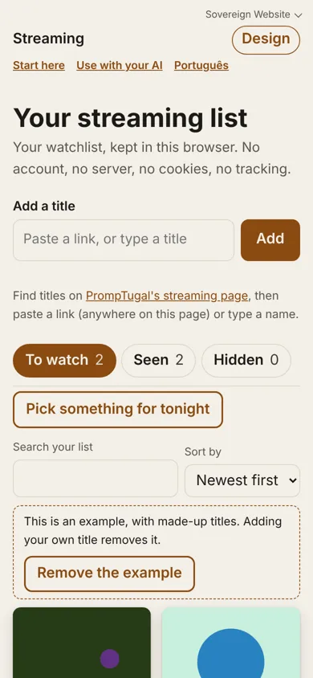
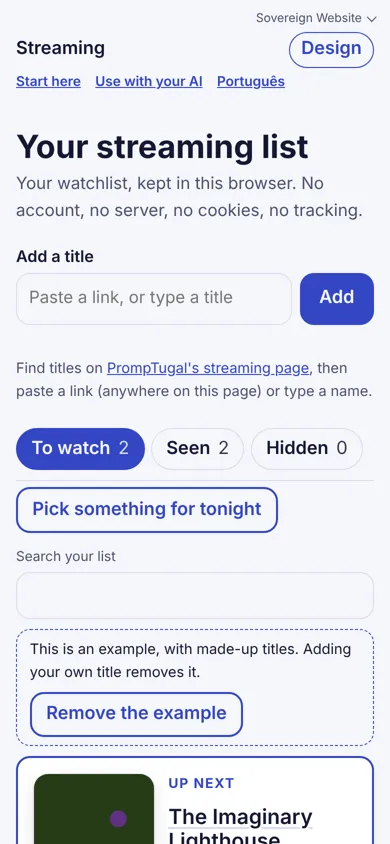
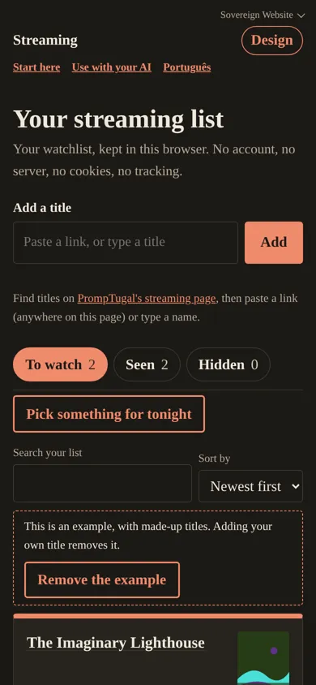
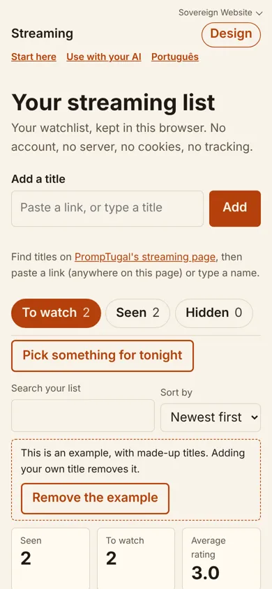
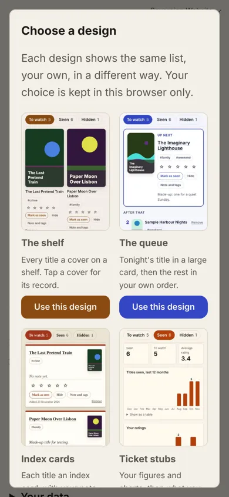

Synthetic users: Streaming, round 3
Site: https://streaming.tool.sovereignweb.site/ at ee2c816 (v0.1.15), kept by streaming.d: five new designs since round 2 (The shelf, the home and Automatic; The queue; Index cards; Ticket stubs; The list), each light and dark, and a "Design" button in the header that opens five screenshot cards. The run covered the example list ("Show an example list", made-up titles) in all five designs, the empty first visit and the chooser. Run: 22 November 2026, 05:04 UTC, by synthetic-users.d, asked for by design.d. Look score: 3.2 (3, 3, 4, 3, 3), level with round 2. Best design votes: The queue 2, The shelf 2, The list 1. Weakest: The list 2, Ticket stubs 2, The queue 1. Wow: none of the five. Closest: Index cards (three), The queue (one).
Method: Synthetic users. One subagent per persona, each given only the screenshots (phone first screen 390 x 844, full-page phone, desktop 1440, light and dark, at 2x, for every design) and the visible text. None was given the guidelines or design.d's findings. The site's own audience, as design.d set it: someone in the UK or Portugal who watches Netflix, Disney+, Prime Video or Apple TV+ and wants to keep their own watchlist. These are simulations, and never replace the measured checks or a real person.
| Persona | Look | Best | Weakest | Closest to wow | The one change |
|---|---|---|---|---|---|
| Phone visitor | 3 | The shelf | Ticket stubs | The queue | Push the list up so a title shows on the first screen |
| Small business owner | 3 | The shelf | The queue | Index cards | Lead with pictures, at the top |
| Low-vision reader | 4 | The list | Ticket stubs | Index cards | Darker, larger secondary text and pills |
| Design critic | 3 | The queue | The list | none | Let the list lead: fold search, sort, "Pick something" and the notice into one bar |
| Streaming viewer | 3 | The queue | The list | Index cards | Real artwork, or which service each title is on |
Agreed by all five
- No "wow". Index cards came closest for three: serif type, the dated cards, the dark versions.
- "No account, no server, no cookies, no tracking", early and plain, earns trust, with the fenced, labelled made-up example and the export note.
Agreed by four
- Still reads as a form more than something about films (all but the low-vision reader). The critic: all five keep "the same top two thirds of the page" and change only the item area, the accent and sometimes the font.
- The chooser on a phone: the captions are cut off at the bottom of the sheet and the page shows behind it. On a still screenshot the sheet may simply scroll; a visitor cannot tell.
- Ticket stubs opens with figures and charts before any title (two call it the weakest).
Agreed by three
- On the phone the titles start at the bottom edge of the first screen, below the add box, tabs, "Pick something", search and the example notice.
- Faint second-layer controls: pale "Hide" and "Note and tags", small grey "Remove", outline stars, and The queue's "Move up" and "Move down", which read as switched off.
- The numbers do not add up: the example says Seen 2 beside two visible titles, and the chooser's previews show other counts (5, 6, 1). Checked: the previews use a different sample list from the example.
- On desktop The shelf leaves two small covers on the left and a wide empty area.
Agreed by two
- The covers are abstract shapes, not posters.
- "PrompTugal" and "Sovereign Website" are unexplained names.




